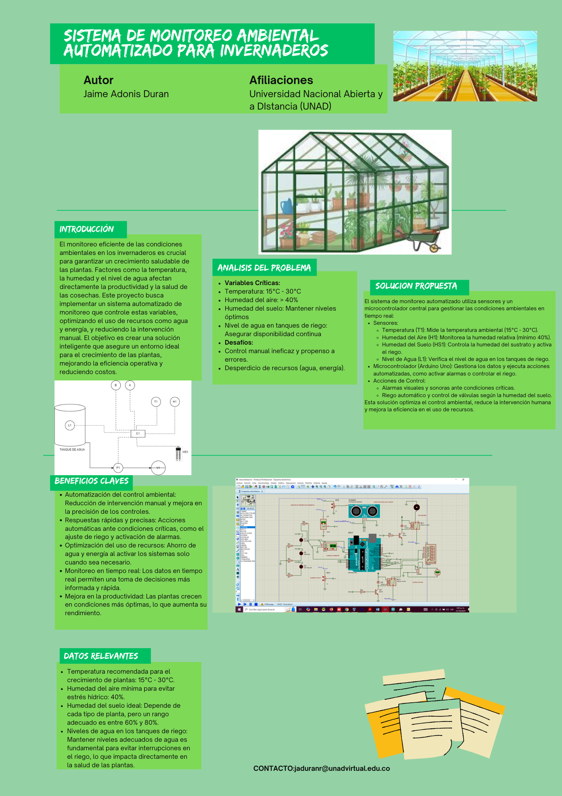

Conozca algunos de los proyectos y soluciones implementadas con éxito.
Desarrollar un sistema automatizado para el monitoreo de variables ambientales críticas en invernaderos, optimizando el riego y reduciendo costos operativos.
Implementación exitosa de un sistema que asegura condiciones óptimas, reduce la intervención manual y mejora la productividad del cultivo.
Explora las infografías y videos que muestran el proceso y los logros del proyecto.
